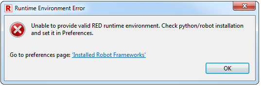

As mentioned earlier RED requires Python interpreter with Robot Framework installed in your system. Without it numerous RED features will not work: you will not be able to run and debug tests, the project will not be validated or content assistant will not give any proposals for keywords coming from libraries.
If there is no environment established RED will signal this: error will be reported by workspace validation for each red.xml file in your projects or the dialog will be presented when opening editor:

There are two ways in which Python & RF environment can be established: automatically or manually via Preferences
In most cases there is actually nothing required from user and RED will automatically detect Python installation. This only require that the path to one of those executables (Unix-like / Windows):
is appended to PATH environment variable in your system.
It is possible to add environments manually in Window->Preferences->Robot Framework->Installed frameworks. Simply use Add... button to open dialog in which the directory can be chosen. It should be the directory which contains one of the executable files listed above.
If proper directory is chosen you will see it listed in the table together with the information about version of Robot Framework installed in it. Otherwise the added entry will be marked with orange/red color and tooltip would show information about the problem (either it was not recognized as Python directory or there is no RF installed).
Multiple environments can be defined here, but only one should be selected and it will be used by all project unless the project overrides this setting locally in its red.xml configuration file.
Additionally the automatic recognition process can be started from preference page through Discover button. It will look through directories in your PATH variable to see if any of listed executables are there.